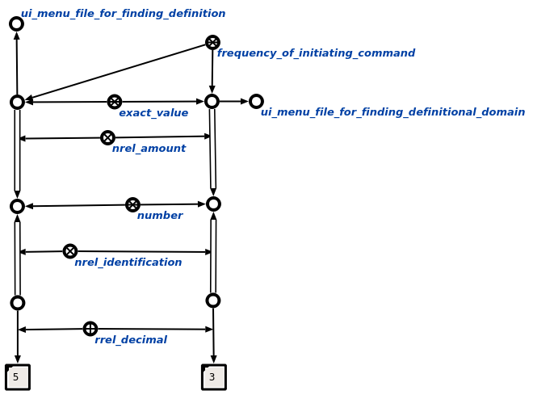

Команда пользовательского интерфейса определения частоты инициирования каждой команды предназначена для определения числа вызовов каждой команды конкретного пользователя, который является автором данных команд. Единственным аргументом команды является знак пользователя. Результатом выполнения команды является конструкция, содержащая параметр частоты, измеряющий количество вызовов каждой команды пользователя.
